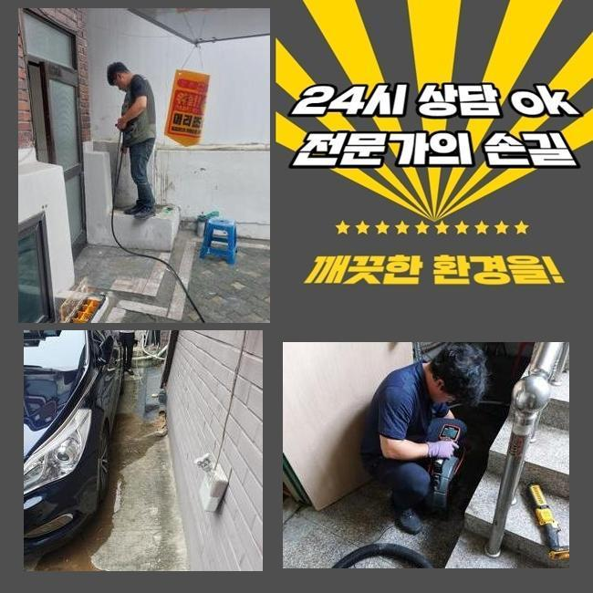
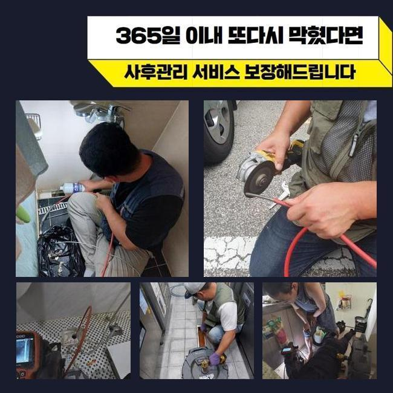
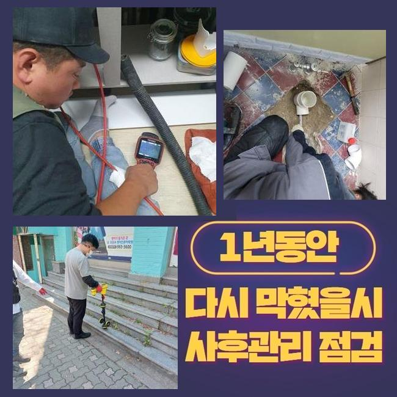
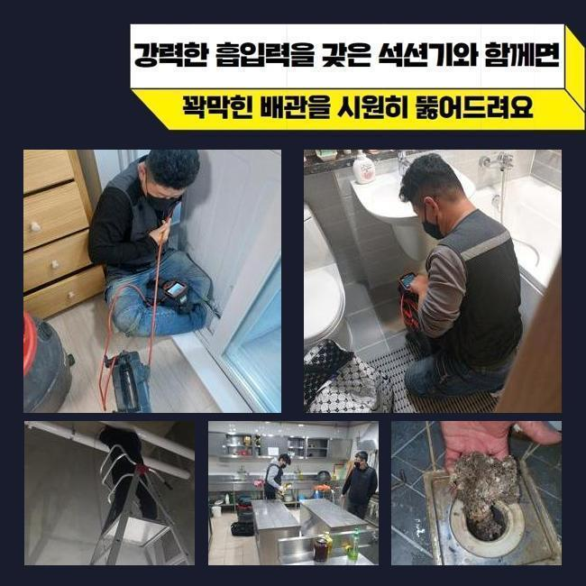
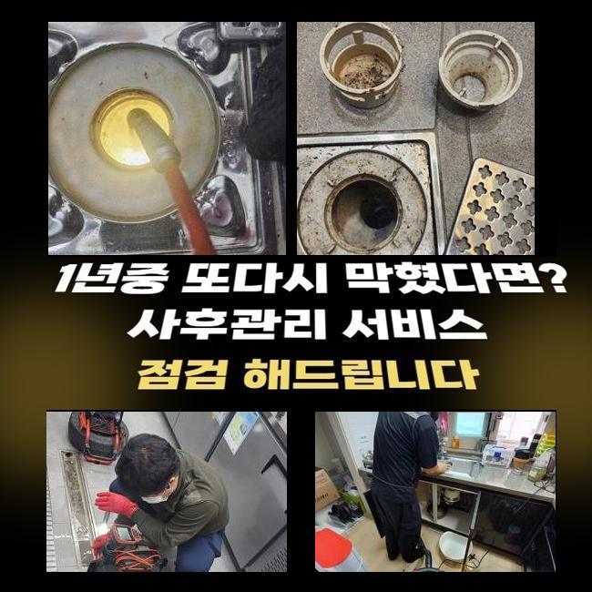
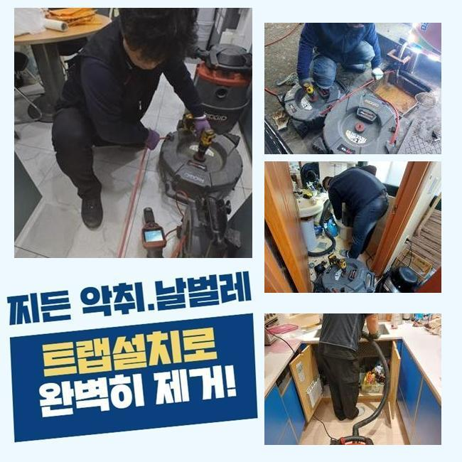
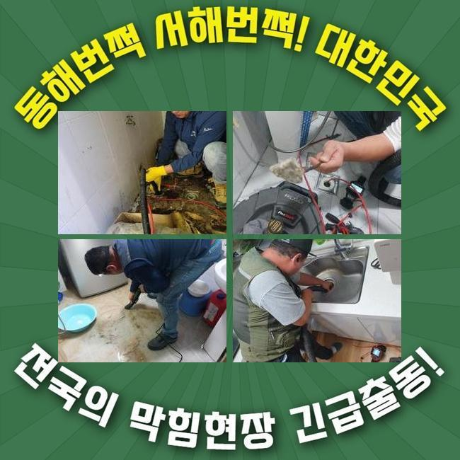

🏠 서초구 우면동싱크대배수관막힘 염곡동 하수구뚫어주는업체 배관뚫는업체
용인 싱크대막힘 전문 시공 후기

📋 작업 개요
- 위치: 용인
- 서비스 유형: 싱크대막힘, 하수구막힘, 배관막힘, 역류해결, 뚫는업체, 배관청소, 고압세척, 설비공사
- 작업 일시: 2025. 3. 1. 5:16
- 업체명: 하수구수사대 (010-5615-2118)
🔍 문제 상황
서초구 우면동싱크대배수관막힘 염곡동 하수구뚫어주는업체 배관뚫는업체
아늑해야할 가정안에서 때때로 발발하는 문제들이 있죠
대표적으로 관로막힘을 설명드리고자 해요
배관이 막혀버리면 오취가 퍼지는것을 비롯하여 일상생활의 스트레스를 증가시키죠
관로의 막힘상황으로 세탁기 등을 사용못하고 역류증세까지 보인다면 더더욱 문제는 심화될텐데요
본 글에서는 투룸 세탁실 배관막힘으로 여러종류의 장비들을 써서 처리한 부분을 안내해 드리도록 할게요
의뢰자께서는 다용도실 안에 배치된 세탁기 배수관에서 배수문제가 발발하였다며 저희팀에 문의를 넣으셨는데요
작업차량에 샤프트장비와 흡입기기 그것에 더하여 내시경cctv까지 실은 뒤 고객님의 위치로 가게 되었습니다
도착해 보니 고약한 냄새가 올라왔고 역류까지 되는 정황을 목견할수 있었어요
세탁버튼을 눌러서 배수를 시켜보려고 노력했지만 도리어 넘치는 정황이 나타났다 설명하셨죠
단순히 세제성분만 토출되는게 아닌 크고작은 노폐물까지 방출되는 상황이었죠
특정한 주거지역에선 베란다와 싱크대의 하수관이 이어진 경우도 있습니다
그부분 역시 조사하기로 합니다
막힘문제를 명확히 파악하려 의뢰인께 싱크대 쪽이나 또다른 관로에 막힘이 일어났거나 역류증세가 생긴적은 없었는지에 대해 여쭸는데요

🔎 원인 분석
💡 전문가 진단: 정밀 진단 장비를 사용하여 슬러지의 고착 여부를 판명하고 타격/세척 작업을 실시했습니다.
7일전쯤 물이 안내려가 슈퍼마켓에서 구매했던 구연산과 세제를 부어본적이 있다고 하셨죠
이에 따라 싱크공간과 관계된 배수관에 정체의 이유가 있을거란 판단이 들었어요
저희팀이 내방한데의 역류를 정리하려고 증상을 찾아보기로 하였죠
배관내시경을 이용해서 관로안을 진단하기로 한건데요
배수문이 막혀 내부에 내시경을 넣지 못할땐 방수기능이 탑재된 청소기기로 배관의 침전물을 제거하게 되죠
해당 공정으로 수리시간을 단축할수 있답니다
세척중에 여러 슬러지와 미세물질이 배출되었는데요
그렇지만 이것만 가지고서는 근원적인 막힘동기가 어떠한건지 밝혀내지는 못했죠
단순하게 석션으로 소제할수 없는것들이 상당하였기에 즉각적으로 내시경cctv를 투입하여서 관로의 상황을 관측하기로 했습니다
이물들을 면밀히 들어다보니 바닷가쪽에서 나오는 흙성분이었죠
세탁기에서 나온 정황일 가망성이 높았죠
고객님에게 휴가일정이 근래에 있으셨나 물었더니 뻘이 많은 해안가에 갔다오셨다고 말해주셨어요
먼저 자잘한 이물들을 처리하고 한층 공격적으로 뚫음시공을 속행하기로 했죠
그러면서 하단부위까지 처리가능한 장비들을 쓰기로 결정했죠

🔧 작업 과정
내시경카메라를 활용하는 까닭은 막힘이 일어난 동기를 명확히 간파하고 정체를 해소하려는 목적인데요
흡입장비로 소제를 이행하고 노즐 끝단에 존재하는 내시경cctv를 이용하여 하수관 안쪽을 조사해 보았어요
후미진 위치까지 진단해보았고 근본적인 트러블의 사유를 알아낼수 있었습니다
이처럼 배관에서 일어난 고장은 여러 변수에 의하여 나타나게 되며 처리방책이 단조로운것도 아니죠
그렇기때문에 전문적인 기기들을 토대로 시공을 해나가야 원만하게 정리할수 있어요
혹시라도 엉성하게 정체사태를 정리하려든다면 더더욱 고장이 증가할수 있단 것을 기억하시길 부탁드립니다
배관 내부를 배관내시경으로 점검하고 있답니다
관로의 실측값은 생각한것보다 크고 형태도 복잡해서 즉각적으로 파악하기에는 어려운 부분이 많습니다
그럴때에 콤팩트한 내시경cctv가 커다란 구실을 할수가 있답니다
배관내시경을 이용해서 관로안을 면밀하게 확인하였더니 여러종류의 슬러지와 자그마한 알갱이들이 혼합되어 있었죠
해당 물질은 배수되기 어렵고 단단하게 고착화되기 쉽습니다
자그마한 성분들은 하수관을 통해서 수월하게 바깥으로 배출되겠으나 일거에 그것들을 배관에 투입한다면 이곳처럼 체증이 가속화될수 있답니다
또한 그런 정황이 지속된다면 관로에 이물막이 생겨나기도 합니다
잔재들의 성질에 따라 사용되는 장비들이 달라요
일례로 양말같은 폐기물이 누증되어 있다면 고리가 달린 도구를 써서 끄집어낸 뒤에 흡입장비로 관로 안을 청소해야 됩니다
혹시라도 이러한 과정을 생략하고 곧바로 분쇄공정에 들어가면 배관안이 더욱더 안좋아질수 있답니다
찌꺼기들이 뭉텅이처럼 상당량 상존할때는 자그마한 크기로 분쇄시키는 시공을 진행합니다
해당 세대는 흙더미들과 함께 뒤섞여 있었기에 플렉스샤프트를 이용해서 분쇄시키고 뚫음시공을 진행한거죠
이곳에서는 전 찌꺼기들을 세정한다음 배관카메라로 또다시 진단을 실시했어요
이후 상존하는 물질들은 분쇄장비로 깨끗이 소제하고 즉각적으로 물이 잘 내려가는지 확인하였는데요
다량의 물도 시원하게 흘러내려가는걸 목견하게 되었습니다
공사현장에서 토출된 지저분한 것들을 전체적으로 소거하고 치우는것으로 시공을 끝내게 되었죠


✅ 작업 완료
해당되는 물막힘을 사전에 방지하려면 정기적으로 하수구 확인했고 청소해야 됩니다
싱크대쪽 배수관에서는 기름찌꺼기들이 막힘을 유발하고 역류증상까지 촉발하기도 해요
그러한 사태를 마주한다면 머뭇거리지 마시고 즉시 전문업체를 찾으시는게 바람직합니다
일반인이 다룰수있는 범위는 본원적인 해결을 만들어내기 힘들며 막힘상황이 한층 나빠지는 케이스도 자주 볼수 있어요
전문가의 세척공정은 간단하게 삶을 정상적으로 만들어주는것 뿐만아니라 위생상의 안전함을 담보하는데도 필수적인 역할을 수행합니다
또 그문제가 지속된다면 타주민에게도 곤란한 상황을 야기할수 있다는것을 기억하셔야 해요




⚠️ 주방 싱크대 배관 막힘 예방 수칙
- ✅ 기름기가 묻은 식기나 프라이팬은 설거지 전 키친타올로 반드시 기름때를 닦아내세요.
- ✅ 주기적으로 싱크대 개수대에 뜨거운 물을 가득 받아 한 번에 내려 배관 내부 기름을 씻어내세요.
- ✅ 배수구 거름망을 미세한 필터로 사용하시고 음식물 찌꺼기가 틈으로 새어 들지 않게 관리하세요.
- ✅ 베이킹소다와 식초를 뜨거운 물과 함께 일주일에 한 번씩 부어주면 배관 살균과 막힘 예방에 좋습니다.
💡 핵심 정리
- 확실한 장비 작업(내시경 점검 및 샤프트 스케일링)으로 원인을 뿌리 뽑습니다.
- 작업 후 1년 이내에 동일한 부위 재발 시 100% 무상 A/S 서비스를 보장합니다.
- 서울 · 경기 · 인천 전 지역에 24시간 언제든 긴급 출동할 수 있도록 항시 대기 중입니다.
❓ 자주 묻는 질문 (FAQ)
🚨 용인 싱크대막힘 문제로 고민이신가요?
정확한 원인 진단과 확실한 시공으로 재발 없는 해결을 약속드립니다.
24시간 긴급 출동 | 서울 · 경기 · 인천 전지역 | 1년 내 재발 시 무상 A/S